2003 год. Call of Duty
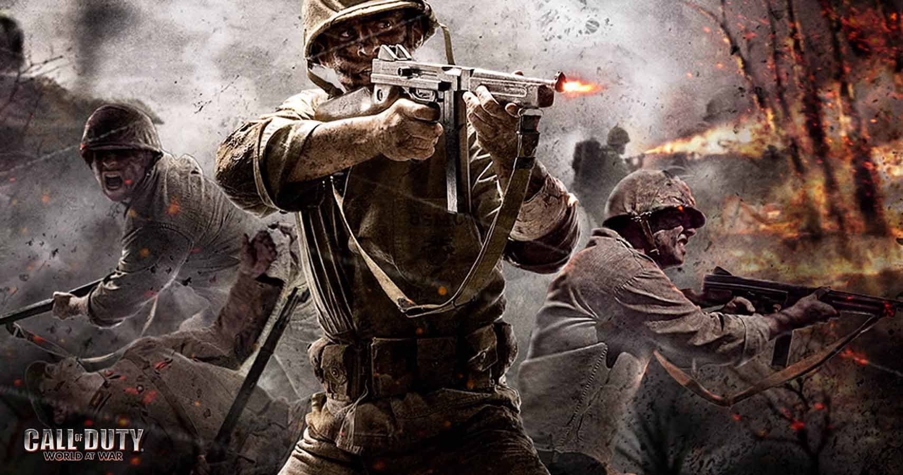Кем бы вы ни были, вы наверняка хоть раз запускали Call of Duty — в конце концов, это самый популярный шутер современности. За прошедшие годы вышло пятнадцать основных тайтлов серии и целая туча спин-оффов. В этом году «колде» исполняется шестнадцать лет, а на прилавки магазинов должен лечь перезапуск Call of Duty: Modern Warfare: восстановить ход событий проще всего будет по нашей ленте новостей об игре. А ведь началось всё с того, что пара создателей Medal of Honor: Allied Assault решила сделать собственный шутер про Вторую мировую…
Оригинальную Call of Duty разработали выходцы из студии 2015 Inc, основавшие собственную компанию Infinity Ward. Но если «Медаль за отвагу», над которой те трудились на предыдущем месте работы, рассказывала скорее об одиночных диверсиях в тылу врага, то CoD забрасывала игрока прямо на линию фронта, где сталкивались целые армии. Движок id Tech 3 помог разработчикам не только добиться отличной картинки, но и позаботиться о более или менее реалистичном ИИ. Интеллектом обладали не только противники, но и союзники: они активно имитировали боевые действия, занимая укрытия и подсказывая игроку, что делать.
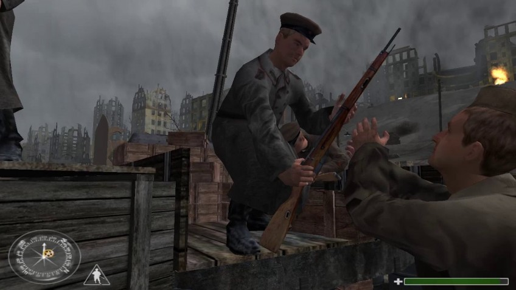Первые задания за советского солдата в Сталинграде надо проходить без винтовки в руках, а местные комиссары могут пристрелить на месте, если не подчиняться их приказам.
Первая Call of Duty тоже удивляла масштабами. В игре было аж четыре сюжетные кампании — за американских, британских и советских солдат, а в последней все три армии добивают последние силы нацистов. Infinity Ward уже тогда отличалась творческим подходом к дизайну миссий и режиссуре: тут тебе и уничтожение немецких зениток во Франции, и освобождение Сталинграда, и покатушки на автомобилях и танках. В 2004 году всё это перекочевало в Call of Duty: Finest Hour — спин-офф игры для Xbox, PlayStation 2 и GameCube, разработанный студией Spark Unlimited.
2005 год. Call of Duty 2
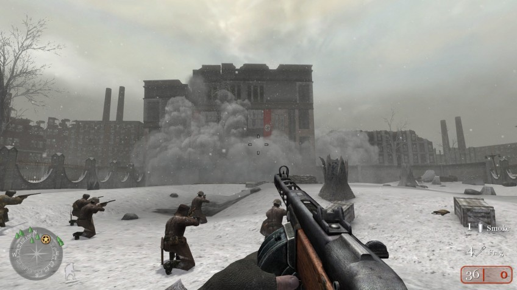Первая часть получила лестные отзывы критиков, поэтому сиквел не заставил долго себя ждать. Концепция Call of Duty 2 не изменилась: масштаб, масштаб и ещё раз масштаб. Битва за Москву, операции в Тунисе, легендарная высадка в Нормандии — словом, все самые крупные и значимые сражения тех лет. Но если в нарративе и режиссуре вторая часть просто взяла лучшие находки предшественницы и в точности повторила, то в технических аспектах игра ощутимо похорошела.
По тем временам графика CoD 2 удивляла: текстуры выглядели реалистично, а спецэффекты стали куда «гуще», чем раньше. Движок IW Engine v2.0 показал себя отлично!
Call of Duty 2 взяла на вооружение механики, которые в будущем сделались неотъемлемой частью не только серии, но и самого жанра: она задала моду на годы вперёд. Автоматическая регенерация здоровья, зачатки акробатики, удобный HUD, отмечавший все цели задания прямо на экране, — Infinity Ward позаботились об удобстве и эргономике. А вышедший в том же году спин-офф Call of Duty 2: Big Red One об истории американской 1-й пехотной дивизии стал первым опытом студии Treyarch. Будущие законодатели мод франшизы настолько зарекомендовали себя, что именно им выпала честь разрабатывать следующую полноценную игру серии.
2006 год. Call of Duty 3
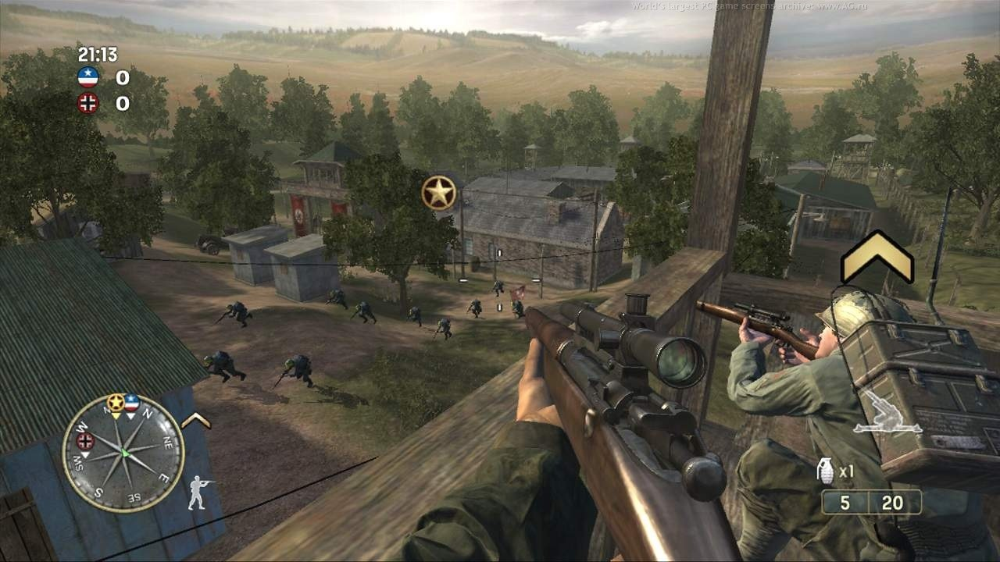Первый серьёзный проект Treyarch по франшизе вместо трёх театров боевых действий показал только один — западноевропейский, 1944 года, — зато с разных перспектив. Игра рассказывала как о бравых американцах, так и о британцах, канадцах и даже о поляках: им посвящена отдельная танковая секция, от которой до сих пор дух захватывает. Со времён Big Red One студия далеко шагнула в плане постановки, к тому же зрелищные сцены откладывались в памяти благодаря новенькому движку Treyarch NGL. В игре была достойная лицевая анимация, первоклассные спецэффекты, качественные текстуры, трава и множество других мелочей. Картинка впечатляла что на новых, что на старых консолях.
Многим Call of Duty 3 запомнилась не только сюжетной кампанией, но и мультиплеером: он был и в предыдущих играх, но именно третья часть задала вектор развития онлайну будущих Call of Duty. В одном лобби могли находиться до двадцати четырёх игроков, было несколько режимов игры, ранги, система классов и прочие нюансы.
2007 год. Call of Duty 4: Modern Warfare
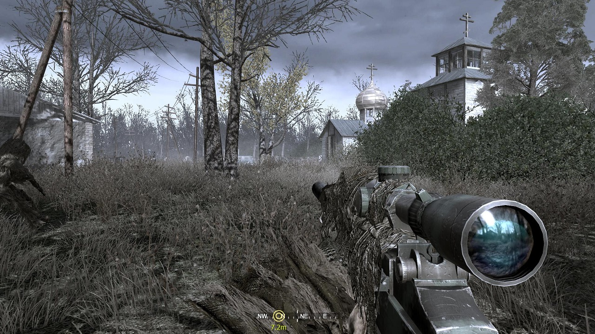Ровно через год после выхода Call of Duty 3 прогремел релиз, раз и навсегда изменивший серию. Во-первых, четвёртая часть Call of Duty полностью отказалась от исторического сеттинга и отправила игроков на спецоперации в современных горячих точках. Во-вторых, сильно эволюционировали постановка, оружие, экшен — всего было больше и лучше, чем когда-либо прежде. А сюжет, сосредоточившийся на судьбах нескольких конкретных солдат, подарил нам капитана Прайса — этот усатый вояка со временем стал настоящим лицом Modern Warfare, а то и всей франшизы.
А мультиплеер, где разработчики довели до ума идеи Call of Duty 3, фактически начал новую эпоху в истории онлайновых шутеров. Игроки могли в мелочах настраивать своего персонажа, подбирать ему перки, оружие и обвесы по вкусу; появились награды за серии убийств, которые позволяли вызвать на поле боя дрона-разведчика, бомбардировку с воздуха и даже вертолёт поддержки! Мультиплеер первой Modern Warfare многие игроки и по сей день считают эталонным, а некоторые полюбившиеся публике локации уже не раз появлялись в других играх серии — настолько хороши получились арены для матчей.
2008 год. Call of Duty: World at War
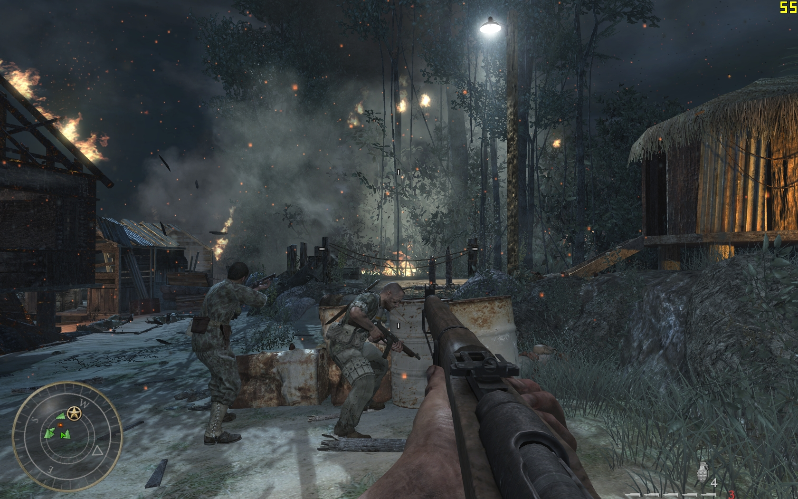После MW пути Infinity Ward и Treyarch немного разошлись: вторые, получив опыт разработки Call of Duty 3, решили и дальше развивать тематику Второй мировой. На тихоокеанском фронте мы в роли американского солдата сражались с силами Японии. А на европейском — уже в рядах советской армии — вместе с сержантом Резновым били нацистов. World at War показывала жестокость войны во всех красках: советский солдат в первой же миссии прятался от нацистского патруля прямо в горе трупов.
В игре появилась расчленёнка, сожжение врагов огнемётом, убийства в штыковой… В общем, кровь лилась рекой. И от столь брутальной войны трудно было оторвать взгляд: Treyarch своё дело знали. Но помимо сюжетки и неплохого мультиплеера в World at War был ещё один режим — зомби-мод. Он появился в проекте чуть ли не случайно, и поначалу пресса почти не обратила на него внимания, но после релиза он получил бешеную популярность, а в будущем и вовсе стал обязательной частью программы многих Call of Duty.
2009 год. Call of Duty: Modern Warfare 2
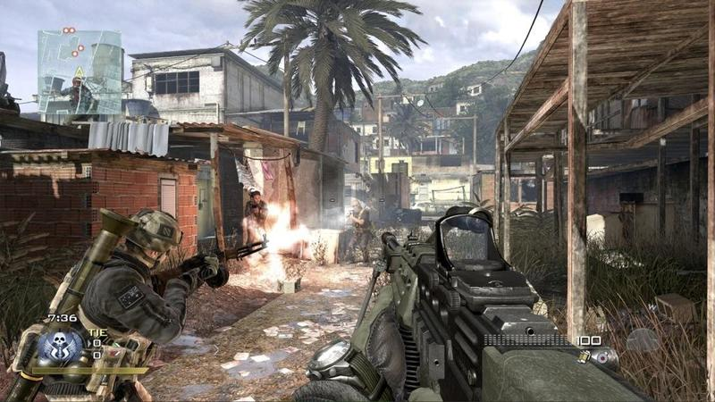Продолжение истории «Соупа» Мак-Тавиша и капитана Прайса отталкивалось от фундамента, заложенного предыдущей Modern Warfare. Концепт остался тем же: опять террористы, опять спецназовцы. Гоняй из одного уголка планеты в другой, добывай важную информацию, штурмуй базу с ядерными подлодками, бегай по бразильским фавелам. Классика боевиков. В этот раз постановка одиночной кампании местами радовала даже больше, чем в оригинальной Modern Warfare: в сюжет добавили драмы, а некоторые сцены фанаты серии помнят и до сих пор.
И если геймплей в одиночной кампании не особо изменился, то мультиплеер получился по-настоящему прорывным. Новые перки и тактические возможности (ох уж эти парные «Глоки», от которых никак не спастись) увеличили динамику перестрелок. Добавились новые награды за серии убийств: ракеты «Предатор», вызов бомбардировщика AC-130 и даже тактический ядерный удар, который тут же завершал матч. Помимо этого в игре появилась система престижей: прокачавшись до наивысшего уровня, игроки могли сбросить свой прогресс, чтобы начать с нуля... но получить взамен ценные косметические предметы.
2010 год. Call of Duty: Black Ops

На волне успеха Modern Warfare разработчики из Treyarch выпустили Black Ops — новое ответвление серии, действие которого разворачивается в эпоху «холодной войны» и конфликта во Вьетнаме. Пожалуй, именно с этой игры студия получила звание главного «экспериментатора» франшизы: первая Black Ops отличалась от предшественниц на редкость лихо закрученным сюжетом. В нём смешались и исторические реалии, и свойственный серии пафос, и подчас сказочный конспирологический бред — не зря ведь фраза «цифры, Мэйсон!» ушла в народ. В игре был и штурм залива Свиней на Кубе, и российская тюрьма, а также вылазка на Байконур, забег по гонконгскому Коулуну, исследование затонувшего в Арктике немецкого корабля и даже заплыв на бронированной лодке под Rolling Stones.
Мультиплеер не предлагал ничего супернового на фоне той же MW2, но баллистический нож, арбалет и радиоуправляемая машинка со взрывчаткой очень радовали. А вот зомби-режим — совсем другое дело. После успеха в World at War не включить его в Black Ops было бы преступлением, поэтому тут Treyarch постарались. Противостоять зомби можно было как от лица уже знакомых героев World at War, так и играя за Джона Кеннеди, Фиделя Кастро, Ричарда Никсона и Роба Макнамару, обороняющих Белый дом. Собственно, именно Black Ops и закрепила лёгкую долю абсурда как характерную черту творчества Treyarch.
2011 год. Call of Duty: Modern Warfare 3

Третья мировая война — собственно, к ней и вели события первых Modern Warfare. План террориста Макарова удался: весь мир охвачен пожаром нового конфликта между Россией и США. Мы, как обычно, пытаемся помешать плохим парням сделать ситуацию ещё хуже, но в этот раз Infinity Ward чуть снизили планку качества. Именно после Modern Warfare 3 аудитории и критикам начало казаться, что серия потихоньку изживает себя и топчется на месте. Те же идеи, та же постановка, та же драма — ничего нового: разве что история Modern Warfare подошла к не самому красивому, но всё же концу.
2012 год. Call of Duty: Black Ops 2
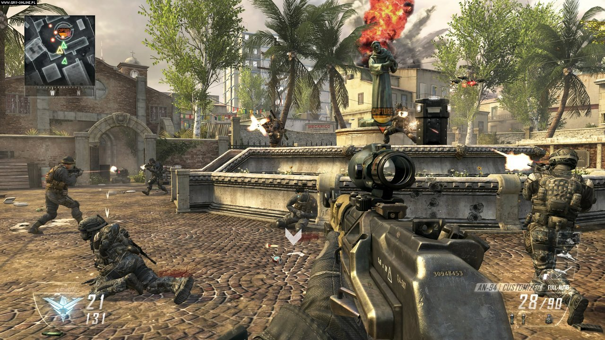Treyarch снова пришли коллегам на подмогу со своим творческим видением: на этот раз они принесли в серию нелинейный сюжет — и, надо сказать, это решение пошло игре на пользу. Вторая Black Ops продолжала историю, начатую в первой части, только теперь рассказ шёл о сыне Мэйсона, который тоже подался в солдаты, пойдя по стопам отца. Мир к этому времени серьёзно изменился: в арсенале войск повсеместно используются ИИ, робототехника и футуристические гаджеты. Юному Мэйсону предстоит одолеть террористическую группировку Рауля Менендеса, ну а от ваших действий зависит, что приключится с героем, его соратниками и всем миром. Treyarch себе не изменили — иначе у них не получилось бы соединить в одном проекте кавалерийские бои и огромных боевых роботов. В игре был даже некий аналог tower defense: задания, где вы защищаете базы от наплыва врагов, переключаясь между доступными солдатами и дронами.
В мультиплеер пришла система Pick 10 — так студия рассчитывала (и отчасти успешно) сделать онлайн чуть лучше сбалансированным. Ну а зомби-режим получился, возможно, лучшим в серии. Благодаря обилию карт и играбельных персонажей у него даже появилась собственная мифология, не связанная с основным сюжетом игры.
2013 год. Call of Duty: Ghosts
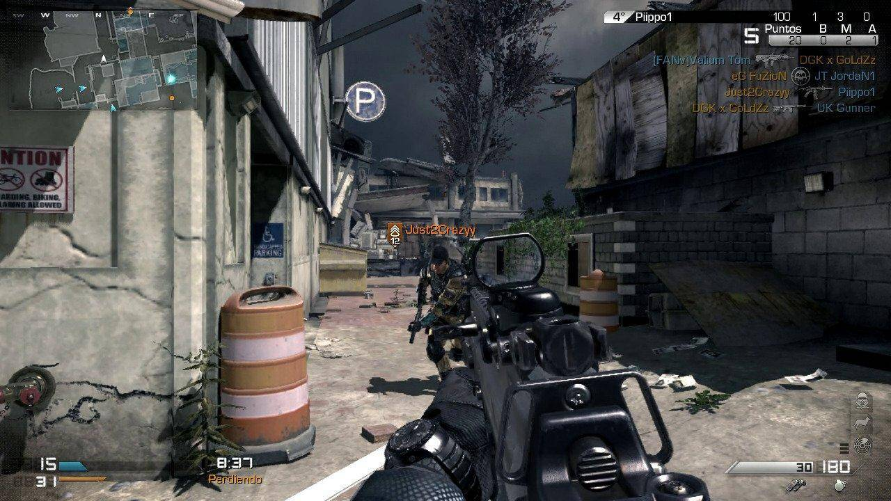А вот у Infinity Ward дела шли по-прежнему не очень. Публика ждала чего-то как минимум на уровне Modern Warfare 2, и в Ghosts никто не верил уже с первых трейлеров. Сюжет рассказывал про отношения отца и сына на войне в недалёком будущем, где Ближний Восток был уничтожен серией ядерных взрывов. Мировая экономика в глубоком кризисе, а тут ещё и группа неизвестных атакует США с помощью захваченного орбитального оружия — словом, на дворе почти постапокалипсис. Игроку, как обычно, нужно спасти Америку от неминуемой гибели. И… в общем-то это всё, что можно сказать про сюжет. Разработчикам было настолько нечем порадовать фанатов, что наличие собаки в отряде главного героя подавалось как серьёзный геймплейный элемент. Call of Duty: Ghosts часто называют худшей игрой серии, и на то есть причины. Виновата довольно неказистая графика, бестолковый сюжет и блёклый мультиплеер. Игра получила средние оценки, а бессменный издатель серии, компания Activision, понял, что пришла пора для перемен.
2014 год. Call of Duty: Advanced Warfare
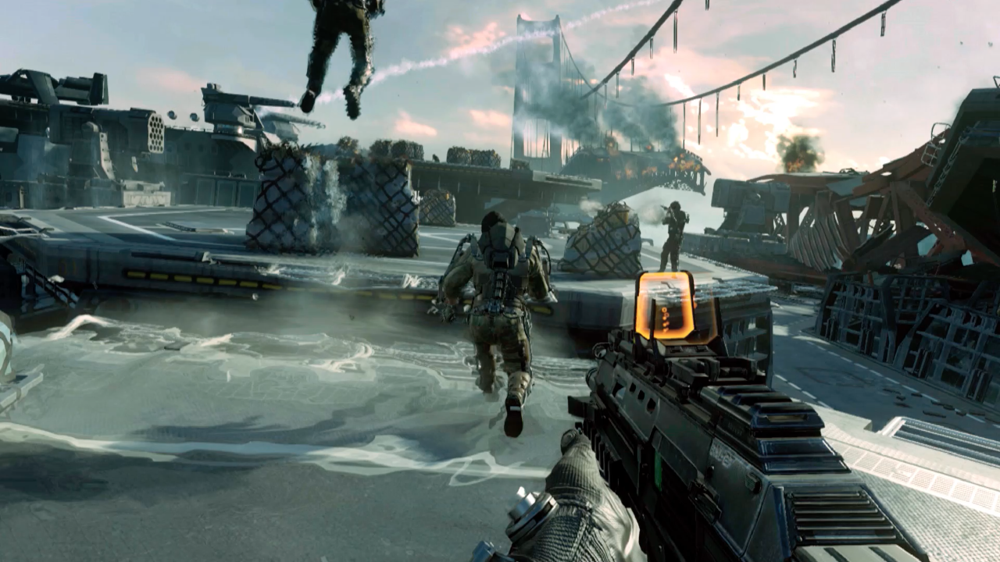За разработку взялась студия Sledgehammer Games, и она решила не просто улучшить Call of Duty, но основательно её переделать — как в идейном, так и в геймплейном плане. Теперь во главе угла стояли мобильность и творческое использование прыжковых ранцев, экзоскелетов и других фантастических гаджетов. Кроме того, у игры появился достойный набор актёров: в основном сюжете участвовали Кевин Спейси и Трой Бейкер, а в зомби-режиме можно было поиграть за Джона Малковича и Джона Бернтала.
Advanced Warfare в целом позиционировалась как Call of Duty нового поколения: благодаря незнакомому сеттингу в геймплей сумели добавить немало новых механик, а ещё игра могла похвастать хорошей графикой и поведением ИИ — всё благодаря новому движку. Мультиплеер и зомби-режим тоже изменились: с добавлением двойных прыжков и уклонений в воздухе они просто не могли остаться прежними. Это было необычно и вправду освежало привычный геймплей, но многие игроки расстроились, что Call of Duty совсем теряет связь с реальностью.
2015 и 2016 годы. Call of Duty: Black Ops 3 и Call of Duty: Infinite Warfare
 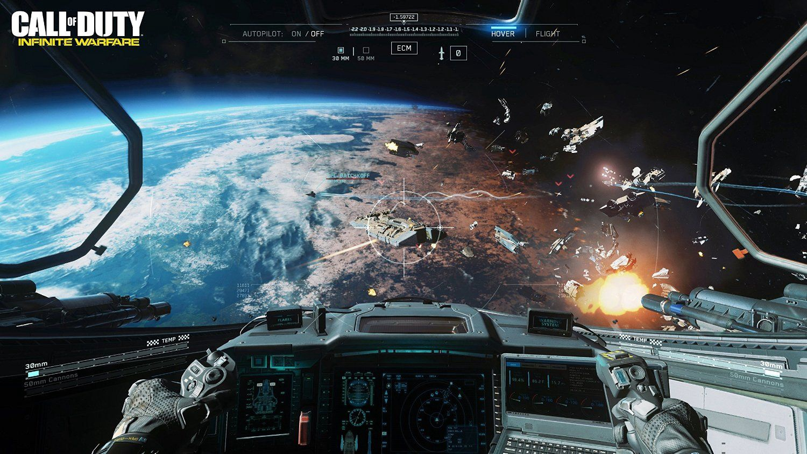
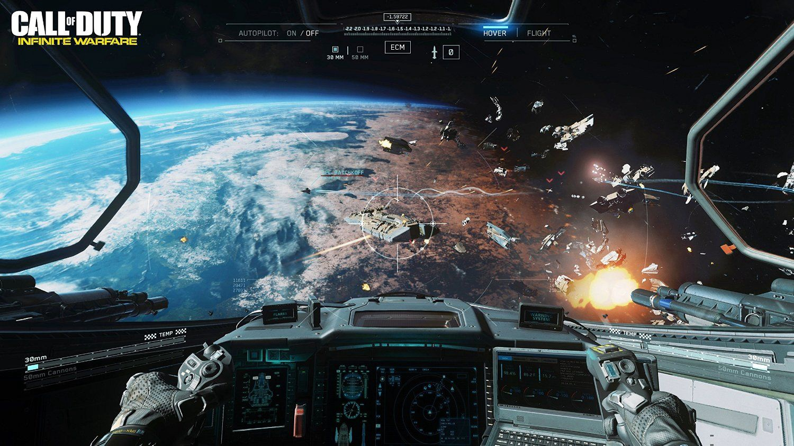
Последовавшие за Advanced Warfare выпуски серии тоже были посвящены всякой фантастике — теперь уже совсем без намёка на реализм. Black Ops 3 от Treyarch рассказывала о солдатах с нейронными имплантами и поезде, сделавшем «бум» (феноменально скверную русскую локализацию быстро растащили на мемы). Студия опять хотела сделать необычно, но получилось попросту мутно — будто Treyarch боялись, что уже не смогут написать сюжет уровня оригинальной Black Ops.
А Infinity Ward разработала — без особых заморочек с названием — Infinite Warfare. Космические станции, перестрелки на Луне, баталии на истребителях (позднее их превратили в отдельную игрушку для PS VR), как в «Звёздных войнах»… А в роли главного злодея уже не Спейси, а Кит Харингтон, известный по роли Джона Сноу из «Игры престолов». Словом, всё примерно то же самое, но теперь в космосе.
Мультиплеер обеих частей завязали на умения персонажей: у каждого героя была своя спецспособность, будь то мощный удар о землю в прыжке или портативный трёхствольный пулемёт. А ещё можно было бегать по стенам и ускоряться с помощью подкатов — обе студии кое-что подглядели у Titanfall, поэтому динамика мультиплеера достигла своего пика. В Black Ops 3 было сразу два режима с зомби: в первом можно было перепройти сюжетную кампанию, вместо людей отстреливая мертвецов, а во втором — выживать в нуарном мегаполисе пятидесятых годов; на роль нескольких персонажей даже позвали Рона Перлмана и Джеффа Голдблюма. А Infinite Warfare внезапно подала свой зомби-мод как стереотипный подростковый ужастик из 1980-х — даже Дэвида Хассельхоффа позвали.
2017-й год. Call of Duty: WWII
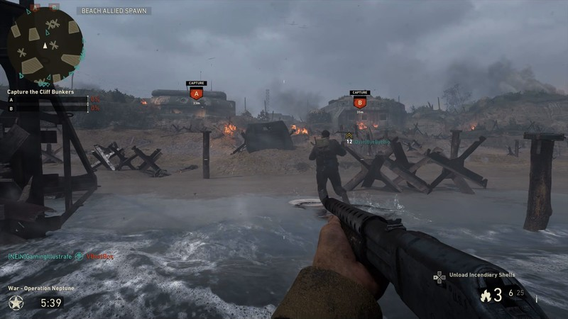К этому моменту фанаты уже ощутимо устали от sci-fi-шутеров. Что обычные игроки, что журналисты в один голос твердили: «Серии пора вернуться к корням» — и Sledgehammer Games их услышали. Возвращение в медленную, тягучую и мрачную Вторую мировую после нескольких «быстрых» проектов подряд было рискованным шагом, но студия всё же на него решилась. Всё как встарь: история о боевых товарищах, Западный фронт, нацисты против всех остальных. Кроме того, чтобы подбросить поленьев в костёр ностальгии, разработчики отказались от автоматической регенерации здоровья (в сюжетной кампании) в пользу классических аптечек.
Несмотря на ограничения сеттинга, разработчикам удалось не только сохранить фирменные черты мультиплеера серии (вроде кастомизации и наград за серии убийств), но и добавить что-то своё. Например, внутриигровой хаб, где можно было взять пару испытаний и посоревноваться с однополчанами на стрельбище.
2018 год. Call of Duty: Black Ops 4
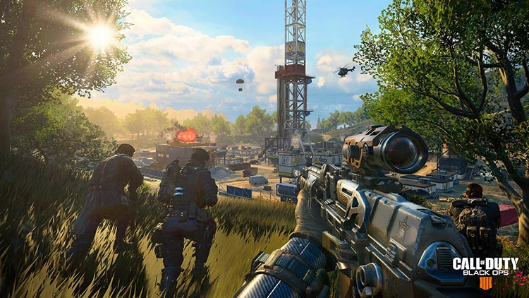Эта Call of Duty, пожалуй, больше всего выделяется на фоне прочих. В Black Ops 4 нет одиночной кампании — только привычный онлайн, зомби и «королевская битва» на сотню игроков. Классический мультиплеер сделал отчаянную попытку уклониться в тактический геймплей: автоматическую регенерацию здоровья заменили на мануальные аптечки, а у персонажей, помимо основной «ульты», появились специальные приспособления вроде колючей проволоки и баллистических щитов. Время на убийство серьёзно увеличилось, а карты были объяты туманом войны: на радаре у игроков появлялось лишь то, что видели их товарищи по команде.
«Королевская битва» стала довольно популярной: по ощущениям, в неё играет больше народу, чем в основной мультиплеер. Но, увы, репутацию игры омрачила модель монетизации. Помимо различной косметики и коллиматорных прицелов по доллару, игрокам предлагали купить боевой пропуск, самой последней наградой в котором был пистолет. То есть не какое-то бесполезное, но престижное украшение, а вполне прикладной предмет, который даёт преимущество над игроками, решившими не тратить деньги на пропуск. Pay-to-win-микротранзакции в игре, которая и так просит за себя полную цену? Ох, это никому не понравилось!
Перезапуск Call of Duty: Modern Warfare
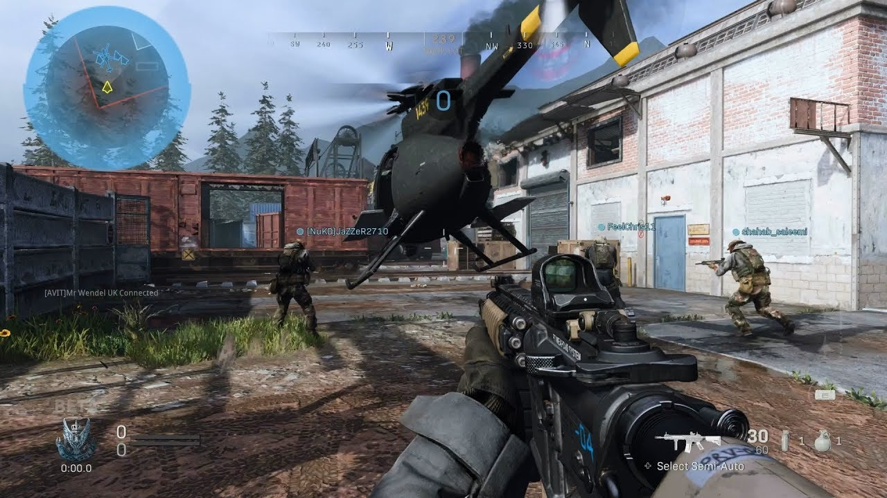Студия решила перезапустить эту историю с нуля, а не продолжать её, поскольку сюжет прошлых частей фактически зашёл в тупик: весь мир в огне, кругом разруха, а Прайс покуривает сигару после убийства Макарова. Всё же основная идея MW была в том, чтобы рассказать военную драму на фоне реального мира и близких к нему военных конфликтов — а это тяжело сделать, когда по обе стороны фронта уже прогремели ядерные взрывы. В Modern Warfare 2019 года разработчики обещают более мрачный, реалистичный, сюжет и неоднозначных персонажей — надеемся, Прайс всё ещё будет открывать двери своим коронным пинком.
Итог
За шестнадцать лет серия Call of Duty успела не раз сменить обличье. От Второй мировой до войны с терроризмом, в космос, в далёкое будущее с лазерами, и снова в современность — франшиза побывала везде. За все годы разработки под руководством Activision в серию внесли свой вклад около двадцати студий: Call of Duty — это не наследие одной команды разработчиков, но достояние всей индустрии.